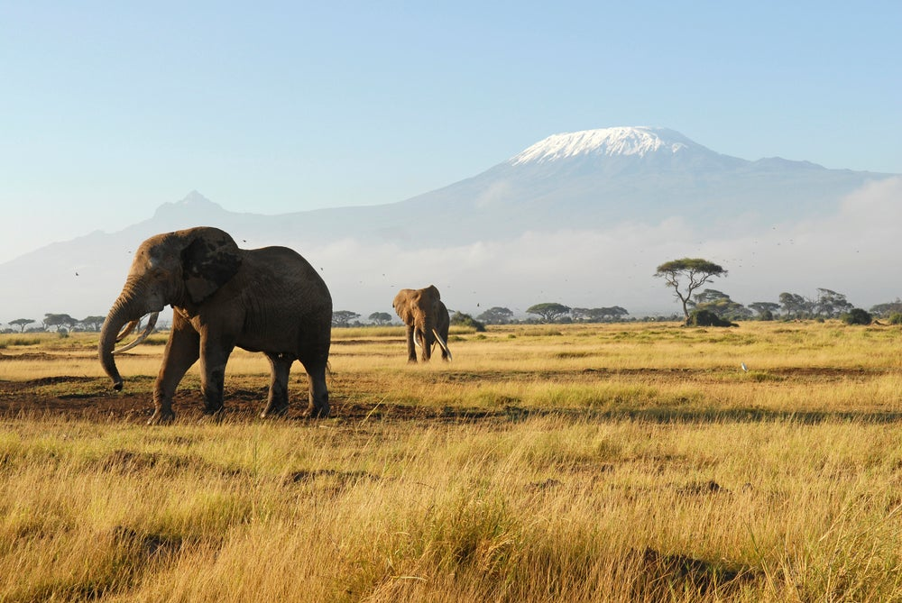

Photographer
Raphael is a young man who has interest in Technology.
I love anything that deals with a camera.My passion started when i was really young and everyone at home used to tell me to take photos of them on their phones untll it reached a time i told myself i have to upgrade, so i got to the camera and my passion grew stronger and stronger every day.
Institution - Self tought ,YouTube
I attended my High School level education from 2016 to 2019, this is where i got more interest in coding and i met many people who inspired me to start coding.
Institution - Murang'a Highschool
Duration - 4yrs[2016-2019]
rkariuki415@gmail.com
www.raphkm.com